鸿慈永祜

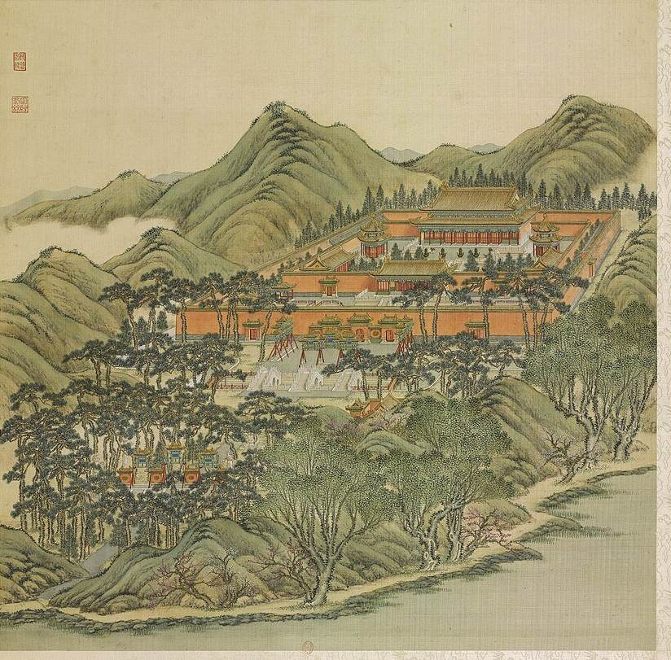
概况
鸿慈永祜即安佑宫，是圆明园中供奉先帝御容的祖祠，位于园西北部（S05 j81:24a）。乾隆七年（1742）仿寿皇殿规制兴建，次年（1743）落成（S05; E1555; E1564）。据《日下旧闻考》，前有琉璃坊座，左右立石华表，坊南及东西又有三坊环列；其南为月河桥，东南为西向的致孚殿三楹；宫门五楹南向，为安佑门，门前白玉石桥三座，左右井亭、朝房；门内为重檐正殿九楹，即安佑宫，中龛奉康熙帝圣容，左龛奉雍正帝圣容，左右配殿各五楹，碑亭、燎亭各一（S05 j81:19b-21b, E1556）。正殿覆黄琉璃瓦（E1560）。1860年10月18日至19日英军奉额尔金之命焚园，安佑宫殿宇被毁（S02 pp.187-188）；残存砖石在民国时期被大量拆运（S02 p.218）。
1744年四十景图及御制诗序
四十景图第十七景（P0017）。乾隆九年诗序云：“苑西北地最爽塏爰建殿寢敬奉皇祖皇考神御以申罔極之懷”；又写周垣乔松“望之起敬起愛”，朔望在此行礼（S05 j81:24a-b）。乾隆《御制安佑宫碑文》追述历代宗庙、原庙之制，说明殿为九室，中奉康熙，东室奉雍正（E1555）。
1860年以前的变化
In the decades after 1860 the ruin served as a quarry. Malone writes that under the Republic 王怀庆 Wang Huaiqing, commanding the Peking gendarmerie, took materials to build his own garden and let carters haul away brick and stone, and that the masonry of the Ancestral Shrine, 舍卫城 and 方壶胜境 was among what was pulled down; pieces from the shrine stood at Yenching University in his day (S02 p.218). Three of the four 华表 were moved to Yenching University in 1925 (S980).
逐座建筑
| 建筑 | 开间 | 屋顶 | 层数 | 朝向 | 来源 |
|---|---|---|---|---|---|
| 鸿慈永祜坊 Hongci Yonghu Fang | S01, S05 | ||||
| 石华表 Shi huabiao | S01, S02, S05, S06, S980 | ||||
| 三坊 San fang | 3 牌坊 | small roofs, green and yellow | S | S01, S05, S08 | |
| 月河桥 Yuehe Qiao | S01, S05 | ||||
| 致孚殿 Zhifu Dian | 3 | S01, S05 | |||
| 安佑门 Anyou Men | about 5 | 歇山, yellow glazed, single eaves | 1 | S | S01, S02, S05, S08 |
| 白玉石桥 Baiyushi Qiao | S01, S02, S05 | ||||
| 井亭 Jing ting | S01, S02, S05 | ||||
| 朝房 Chaofang | 5 each | S01, S05 | |||
| 安佑宫 Anyou Gong | about 9 openings across the front (count uncertain by one) | 重檐歇山: a gable triangle shows at the east end of the upper roof, so hip-gable, not 庑殿; ridge with end ornaments | 1 | S | S01, S02, S05, S06, S08 |
| 配殿 Peidian | 5 each | S01, S05 | |||
| 碑亭 Bei ting | 1 each | 重檐 square or octagonal pyramid, yellow glazed | 1 | S01, S02, S05, S08 | |
| 燎亭 Liao ting | S01, S05 |
另有5座地盘图上未注名称的建筑
图像
1745年木刻

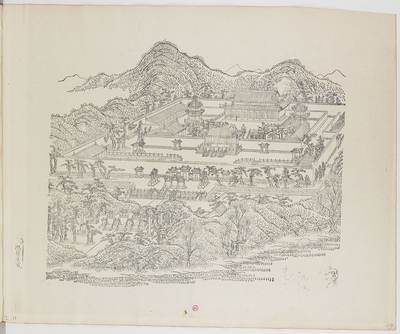
1750至1792年水粉

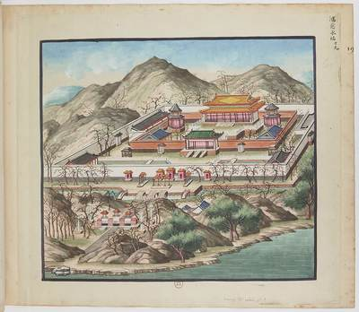
1887年石印本

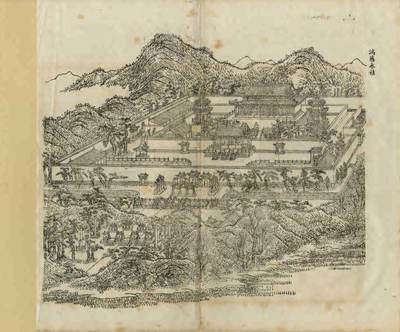
1860至1940年代废墟

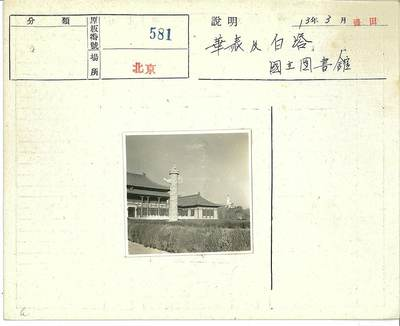

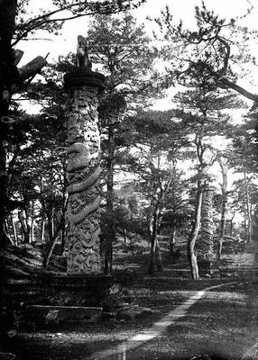
今日

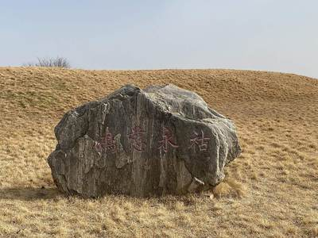
细部

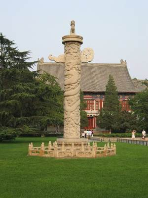

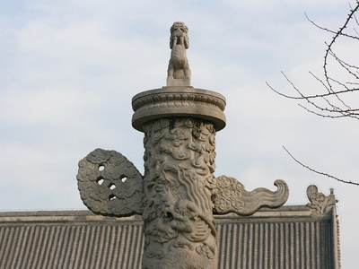

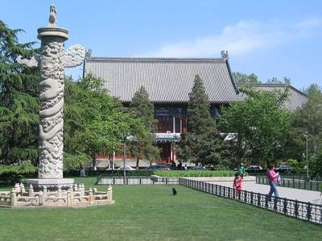

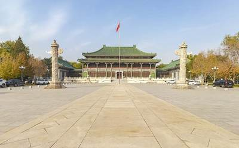
其他图像

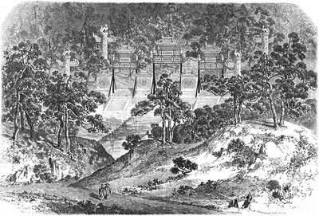

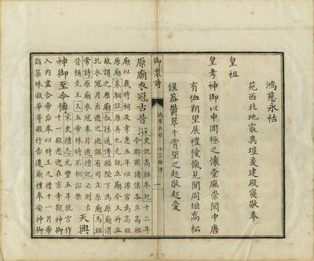
版权所限，请至收藏方查看
- Anyougong gate ruins (安佑宫 gate, file name) 查看： commons.wikimedia.org
园林环境
Yellow glazed roofs on the main hall (E1560) and yellow-glazed coping on red walls (E1563); green-glazed incense burners in the inner court (E1562); pines round the precinct (S05 j81:24b); a moat with marble bridges (E1563).
现存
安佑宫的部分石构件今存北京大学（原燕京大学）：一对汉白玉华表，通高约8米，八角形须弥座高1.24米，原立于安佑宫琉璃坊前，两根粗细不一（S980）；一对石麒麟，高1.74米，座高0.98米，原在大宫门前，乾隆六年（1741）移至安佑宫，1860年未受破坏，清末被盗出后由朗润园园主载涛购得，后随朗润园归燕京大学（S943）；以及一块龙云丹陛石，长3.15米、宽1.30米，另一块在颐和园东宫门（S943）。1925年燕京大学从圆明园运走三根华表，第四根运入城内，后因搬运差错，北大与国家图书馆两处的华表都不成对（S980）。安佑宫台基尚未见考古发掘报告。
考古与勘测
我们读到的资料中未见其遗址的发掘或勘测。
他人的复原
现代诠释，不是证据，本项目不据以定尺寸或位置。
- 鸿慈永诂 (first image), image 747 in a gallery (, render) 查看： thepaper.cn
- 鸿慈永诂 (second image), image 748 in a gallery (, render) 查看： thepaper.cn
已知尺寸
| 部位 | 项目 | 尺寸 | 方法 | 等级 | 来源 |
|---|---|---|---|---|---|
| 华表 base (now at PKU) | Platform height | 1.24 m ± 0.05 | a 测绘或清代图档 | B | S818, fdcb.pku.edu.cn 华表 page, 文物特色 |
| marble 华表 (pair at PKU) | Ridge height | 8 m ± 0.5 | a 测绘或清代图档 | B | S980, page text |
| 华表 octagonal 须弥座 | Platform height | 1.24 m ± 0.05 | a 测绘或清代图档 | B | S980, page text |
| marble pillar (Malone's figure) | Ridge height | 6.1 m ± 1 | b 地盘图或遗址 | B | S02, p.84 |
| the scene's outline on the plan | Extent, long side | 292 m ± 10 | b 地盘图或遗址 | C | S01, layers/scenes_1860, UTM 50N, minimum rotated rectangle |
| the scene's outline on the plan | Extent, short side | 123 m ± 10 | b 地盘图或遗址 | C | S01, layers/scenes_1860, UTM 50N, minimum rotated rectangle |
| island I004 (鸿慈永祜) | Island, short side | 150 m ± 10 | b 地盘图或遗址 | B | S01, layers/islands_1860, UTM 50N, minimum rotated rectangle |
| island I004 (鸿慈永祜) | Island, long side | 302 m ± 10 | b 地盘图或遗址 | B | S01, layers/islands_1860, UTM 50N, minimum rotated rectangle |
| the scene's outline on the plan | Area | 29700 m² ± 3000 | b 地盘图或遗址 | C | S01, layers/scenes_1860, UTM 50N, polygon area |
全部16个数字
| 部位 | 项目 | 尺寸 | 方法 | 等级 | 来源 |
|---|---|---|---|---|---|
| 华表 (pair before the 琉璃坊, now at PKU) | Huabiao height | 8 m ± 0.5 | a 测绘或清代图档 | B | S818, fdcb.pku.edu.cn 华表 Ornamental Columns page, 文物特色 |
| 安佑宫 dragon-and-cloud ramp stone 丹陛 (one at Peking University, one at 颐和园 东宫门) | Danbi length | 3.15 m ± 0.01 | a 测绘或清代图档 | B | S943, zys.pku.edu.cn 6bazys320 |
| 安佑宫 华表 pair (now at Peking University), whole column | Huabiao height | 8 m ± 0.3 | a 测绘或清代图档 | B | S980, zys.pku.edu.cn 6bazys346 |
| 安佑宫 石麒麟 (pair, now at Peking University) | Qilin height | 1.74 m ± 0.01 | a 测绘或清代图档 | B | S943, zys.pku.edu.cn 6bazys390 |
| four marble pillars round the outer pailou | Pillar spacing | 30.5 m ± 5 | b 地盘图或遗址 | B | S02, p.84 (E1561) |
| island I004 (鸿慈永祜) | Island area | 30700 m² ± 3100 | b 地盘图或遗址 | B | S01, layers/islands_1860, UTM 50N, polygon area |
| water inside the scene's outline | Water inside the outline | 3880 m² ± 390 | b 地盘图或遗址 | B | S01, layers/water_1860 within layers/scenes_1860 |
本页引用的资料 (8)
- S01 Plan of the Yuanmingyuan Imperial Garden-Palace, unknown artist, three hanging scrolls, ink and colour on paper, 177 × 253 cm together
- S02 Carroll Brown Malone, History of the Peking Summer Palaces under the Ch'ing Dynasty, Illinois Studies in the Social Sciences XIX, Urbana 1934; reprint Paragon 1966
- S05 《日下旧闻考》 Rixia jiuwen kao (Yu Minzhong et al.), juan 80-85, Kanripo KR2k0036, WYG base
- S06 zh.wikipedia 圆明园, 圆明园四十景, 长春园, 绮春园, 西洋楼
- S08 圆明园四十景图 Forty Scenes album, Tangdai and Shen Yuan, 40 leaves, BnF Estampes RESERVE FT 6-B-9, one BnF record per leaf; poems Qianlong, calligraphy Wang Youdun
- S818 北京大学 房地产管理部 / 校园文物 page, 华表 (fdcb.pku.edu.cn), citing 《燕京大学校刊》
- S943 北京大学 校园文物 pages (zys.pku.edu.cn 文物信息): 石麒麟 (6bazys390) and 丹墀 龙云石 (6bazys320), relics from 安佑宫
- S980 北京大学 (档案馆 / 燕园文物 page), 华表 Ornamental Columns, zys.pku.edu.cn